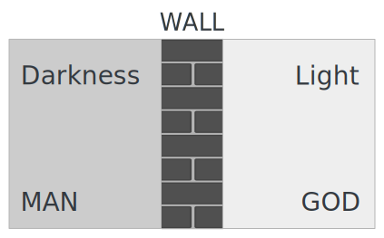

Purpose: To display our love of God by understanding why we need to hate sin and repent of it.
SIN
ISAIAH 59:1-2
- Sin is an archery term that means to "miss the mark." Jesus' standard is the bullseye.

- Sin separates us from God.
- Are you in darkness or in the light right now? How do you know?
ROMANS 3:23
- All have sinned and fall short of the glory of God.
- Who has sinned against God? Everyone — no matter how "small" a sin may seem.

- Which person is further from God — a person who sins a little or a lot?
- A good moral life doesn't save you, because salvation cannot be earned through your deeds.
GALATIANS 5:19-21
- Sin means to "miss the mark." The sins of the sinful nature are obvious. (Explain and share. See Sin Definitions.)
- Which of these sins do you need to repent of today?
2 TIMOTHY 3:1-5
- These are sins of the heart. Some sins are blatant; others are more deceitful. (Explain and share. See Sin Definitions.)
- Which of these sins do you need to repent of?
JAMES 4:17
- Knowing what is right and not doing it is also sin — the sin of omission.
- Do you need to repent of this?
JAMES 5:16
- We are called to confess our sins to one another.
- Prayer is powerful and effective.
ROMANS 6:23
- When we sin, we earn eternal death.
- What does God want to give you? The gift of eternal life!
REPENTANCE
2 CORINTHIANS 7:8-11
- You cannot repent without having godly sorrow. What are the characteristics of godly sorrow?
- The answer to sin is repentance. (Greek — "metanoia" — change of mind)
- A change of mind should lead to a change in actions.
- Worldly sorrow is self-centered, while godly sorrow is centered on God.
LUKE 13:1-5
- First-century Jews believed disasters were divine punishment for personal sins. Jesus rejected this view, teaching that we are all sinners!
- Unless a person repents, they are in peril of eternal condemnation, not just physical death. We must repent — or we will perish!
COLOSSIANS 3:5-10
- Are you ready to put these sins to death once and for all?
- The wrath of God is coming, so break free from sin's slavery!
MATTHEW 5:27-30
- We must be radical in removing the things that cause us to sin.
- Repentance is not just external behavior modification. The goal is a heart transformation that overflows into new attitudes and actions.
ACTS 26:20
- We prove our repentance by our deeds!
- What is your plan to repent of the sins in your life?
Challenge: Have a clear plan of repentance — addressing both sins of commission and omission. It may be helpful to write out a personal sin list to clear your conscience and come into the light by confessing your sins. (This should remain a highly confidential process between those studying the Bible.)